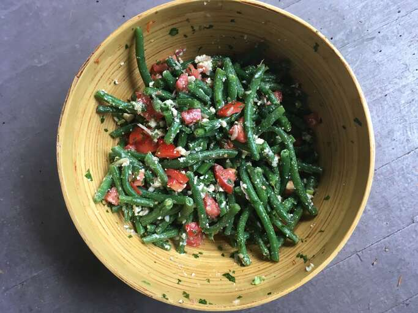

Green Bean Salad

Description
This cold tomato and green bean salad is made with feta cheese.
It's one of my favorite salads for a picnic or a barbeque.
I make this amount for two to three people, but you can easily double or quadruple the recipe.
Ingredients
- 1 pound fresh green beans, trimmed
- ¼ cup olive oil
- 2 tablespoons white balsamic vinegar
- salt and freshly ground black pepper to taste
- ¼ cup chopped fresh parsley
- 1 medium shallot, minced
- 1 clove garlic, minced
- 3 medium tomatoes, chopped
- 2 ounces crumbled feta cheese
Steps
- Bring a pot of lightly salted water to a boil. Add beans and cook until soft,
10 to 15 minutes. Drain well.
- Whisk oil, vinegar, salt, and pepper together in a small bowl.
Stir in parsley, shallot, and garlic.
- Combine beans and tomatoes in a large bowl. Pour dressing over top and mix to combine.
Stir in feta. Allow to sit for 20 minutes before serving.
Return to main page